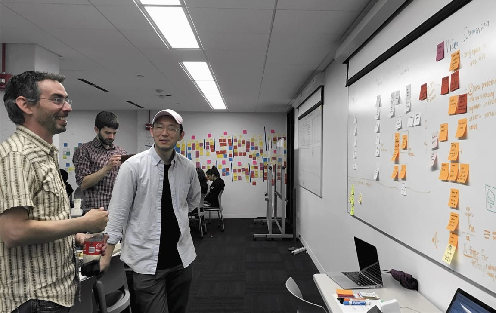

Case Study
Respecting the Artist
-
Summary
-
Native advertising is on the rise and our client is creating a platform for connecting original video content creators with brands interesting in sponsoring content. My team and I conducted research to understand the market and needs of content creators and designed the upload and submission flow to meet client needs for cataloguing videos that respected creators as artists.
Client
- SVD
- *To protect sensitive aspects of their work, the client’s name has been redacted
Role
- UX Designer
-
Team
- David Berghoef
- My-Duyen Nguyen
-
Deliverables
- Domain research
- Competitive analysis
- SME interviews
- User interviews
- User personas
- Low-fidelity prototypes
- Concept testing
- Usabiilty testing
- Mid-fidelity prototypes
- Annotated wireframes
- Information architecture
Project Brief
Who
SVD is an early stage startup looking to create a marketplace to give video content creators an alternative to per-view ad-based monetization. For someone making videos, the only way to monetize is to get views on a few major platforms. Most views don’t pay out and views don’t necessarily correlate to quality of content. Our client’s team has a combined background of decades of years in the traditional media industry and identified an opportunity to create a way to incentivize higher quality content on the internet. Specifically, they have a vision to connect brands and producers with completed, independent video content so that creators can be compensated for the work that means the most to them.
What
My team’s task was to design the entire experience for a content creator from sign up and onboarding through receiving an offer for their first purchased project. We created a sign-up, upload and offer acceptance flow that met our client’s requirements for metadata and business compliance, but more importantly, spoke directly to the content creators as visual artists telling stories. The greatest challenge of this project was finding the common ground and translating the users’ creative and career goals with the business needs of SVD and their content purchasing clients.
The final designs were equally informed by user familiarity, self-perception, aspirations, goals and business requirements for a scalable and viable product.
Constraints
- 2.5 weeks
- Client had specific metadata capturing needs that we needed to accommodate for video processing
- Prior to kickoff our client scheduled their Product Manager to come in person for three days of working directly with the team. This put a hard deadline on our first two sprints and shifted our research and concept testing phase forward but also allowed us the opportunity to workshop design with our stakeholder.
Design Considerations
Who is a Content Creator?
The client came to us with a strong idea of what needed to be captured and the market proposition of their product from the perspective of their buyers. Our task was to find out who the users were as suppliers. We interviewed users from across the spectrum of filmmakers. They ranged from freelance wedding photographers to 30 year industry veterans who had shown their passion projects at Sundance. We wanted to know a few key things about them:
- How they got started in filmmaking
- What they were most passionate about
- How they made a living and if passion projects figured into this revenue
- How they felt about YouTube, Vimeo, and the current state of video monetization
It turns out that regardless of career trajectory and status, there were trends in what every person believed and wanted from their work.
Quality content tells a story
What is the best way to explain the difference between full-length movies, tv shows, independent shorts or even well shot videos on YouTube with vlogs and viral mobile phone footage? That difference boils down to storytelling. Consistently, we found that all the users we interviewed made a distinction between storytelling video and the kind of videos that usually rack up views on YouTube or Facebook. Specifically, they spoke of the original stories they wanted to tell, whether that meant a documentary video of a concert, a web series or a full-length film.
Exposure is bullsh*t
Our solution had to decondition the user from the paradigm of posting videos online for views.
Everyone is frustrated with the monetization incentives that currently exist for video consumption. The users weren’t filming the work they were most proud of with views in mind as much as they were documenting and telling the stories that they found compelling. This was antithetical to the revenue model that currently exists through where you need hundreds of thousands of views on multiple videos a month before you can pay for a night out or maybe utilities.
Even content producers who had had several viral videos and saw some YouTube paychecks didn’t post their videos with monetization in mind. They shared their work because they wanted to and often shared to Facebook and YouTube just to get as many views as possible. The hope was that exposure could lead to paid work, but they were happy to just do the work.
“Who do you know?”
Our solution would have to speak to those that were used to and had extensive networks as well as those that didn’t.
A few interviewees had done sponsored work with brands such as GoPro, Coca Cola and others, which were some of the kinds of deals SVN wants to put users in contact with. However, for our interviewees, these deals had come about not from exposure as much as they had from personal connections they had pulled the right strings to secure gigs through. This was nice for people that had well connected networks, but the goal of SVD was to close that gap for content producers who don’t have access to these resources.
Design Guidelines
Meet the users
In order to capture the main needs of users we identified from our research, we identified three main users that spanned a spectrum of career positions and aspirations.
The users range from the freelance video producer to the industry insider. The primary persona was the individual who has the freedom to make and sell whatever they want as long as they make ends meet for the love of shooting video. Because they were their own boss with low overhead, they are the target users for SVD with lower asking prices and the flexibility to produce a variety of videos. They also tended to be more savvy with newer-media, posting on channels such as YouTube or Facebook, able to follow the trends to create what will be successful.
The secondary and tertiary personas were increasingly tied to their source of income, whether through owning a formal business and pursuing original storytelling as passion projects or as fully IMDB-credited creators within the Hollywood ecosystem. These were the users who had their own commercial business who might shoot pilots to pitch with the money leftover, or people who might fund an independent project that might be successful at a film festival. While these users were also important, they had their feet in both worlds, the new media of the internet and the old system. They didn't have as much bandwidth for the kinds of projects that SVD would need as its bread and butter, and they would be more artisticaly and creatively tied to their work because their time to put into it was less.

Problem Statement
With these personas established, we came to the central problem we were trying to solve, framing a user-centered design problem that spoke to our client’s business goals.
Everyone is passionate about making original content and telling compelling stories, but the most reliable funding is in commercial work. How do we make SVD the platform to bring these two together?
Design Principles
-
Scalable
From processing one video application to thousands stay scalable and maintain a quality of user experience
-
Trustworthy
Be transparent about the process and maintain an atmosphere of familiar professionalism
-
Simplify the business
Handle the business side and let the creators create
-
Opportunity
Exposure to views is talk, emphasize the exposure to important eyeballs with open wallets
Research
A uniquely familiar experience
We knew that throughout our final product, we would need to make sure that we were speaking to content creators with a sense of pride in their work and the value of their story. SVD&rquo;s experience could not be at all like YouTube, Facebook or even Vimeo because the payment was for quality of content, not views.
At the same time, the experience for the user needed to be novel but not confusing and relying on familiar patterns for video uploading online was the quickest way to do that.
Competitive Analysis
Understanding the landscape
The scope of our competitive landscape research covered the following ccompetitive segments. We broke them down across 2 axes, monetization/views and freeform/storytelling. This captured the range of video distributin from viral and stock footage video to traditional outlets like the Hollywoood studio system and film festivals. The main takeaway from all of this was that the most promising segment was the one in which SVD wants to compete, but that they offered a unique take on monetization that was not dependent on views or the established channels.
It was crucial to lay this out early to the client, not only to let them know how we understood the market, but also
The Egalitarian Giants
Current video distribution platforms i.e. YouTube, Vimeo and Facebook. Each have their own strengths, none of which are prioritizing compensating creators for thoughtful and unique content. Facebook is good for engagement and views for exposure. Vimeo is a nice professional platform for hosting videos in high quality with good compression. YouTube is its own ballgame when it comes to monetizing, and anyone who’s watched a 20 minute click-bait titled vlog can tell you that monetization doesn’t necessarily mean high production values and thoughtful storytelling.
Stock footage
Stock footage companies still mostly sell photographs but who are also branching out into B-Roll. This was different from what SVD plans to do, but useful for understanding the options currently available for selling content. Stock footage ruled out any original storytelling content.
Crowdsourced creative agencies
This is the name we gave to a group of businesses that scope talent for larger brands, securing requirements then contracting work to vetted creators or through a bidding model. While these services have gained traction, they were still on the side of dictating requirements and contracting the work in a traditional manner. The bidding model also required a large amount of spec work on the part of the creator without a guarantee of compensation.
“Original Content” buyers
In the era of streaming and fragmented audience segments, more companies are purchasing or funding original content (Netflix, Hulu, Amazon, AOL, Comcast, etc.). These businesses were the closest model to what SVD is trying to do in that they pay well for already finished or pitched content. However, many of these companies are more like traditional models for distribution in that they require a certain level of networking ability and clout. Content that ends up being distributed through these channels is still produced by larger, better funded efforts and focused on longer form work.
Ambulance chasers
These were mostly services for handling the distribution rights for viral videos and catered to videos that were already trending and that weren’t necessarily high quality. The payments were mostly licensing rights to traditional media outlets. Included in this category were also distribution networks for already popular YouTube channels or creators who already had substantial audiences looking to grow to the next level. This helped us understand just how limited the options were for creators SVN was targeting as their primary users.
Ideation
Finding the best solution
After identifying our target users and defining the central problem we wanted to solve, we began developing concepts to test to find out what best met the needs of our target users. We had specific requirements we needed to meet for our solutions from a user-friendliness perspective first, while also while aligning with best practice and business requirements from the client.
Given the short timeframe for the whole project, we wanted to maximize our user testing time. Each member of the three person team designed our own concepts that fell across three focus areas.
- Capturing metadata information through a conversational, short-answer based approach that spoke to the user as a creator (mine)
- A linear, step by step approach to video uploading that relied heavily on existing video platform interaction patterns
- Focus on clear, up front communication and education on the process of submitting a video emphasizing transparency about SVD to inspire confidence in the user and pitch value for the content creator
Concept testing
We tested these three prototypes in paper form both in person and with InVision prototypes for remote tests. We found the strengths and weaknesses of each concept and what best resonated with the users, who were all involved with video production. After presenting the results of our testing of the above three concepts to our client, we found componenents of each concept that were able to work well together in a final design.
Workshopping with stakeholders
Right as we finished validating our concepts and figuring out what worked and didn’t work from our various prototypes, we had a great opportunity. Although our client was based out of Hawaii and California, their head of product was able to come out to Chicago to workshop with us. Over three days we worked with the client to review and analyze the data from our testing. We then decided on a direction for our final design, made sure that things would work for the client with the solution and then built out the concept. By the time they flew out the morning of the third day, we had final screens for the concept that he could sign off on to take into usability testing that afternoon.
Insights
Bringing it all together
Creators as artists
Speaking the user's language
The familiar language asking about who the users were as artists, their vision, what the pitch of their project was and more familiar language tested well. The users immediately understood what was being asked of them. We used the concurrent think-aloud protocol to capture data on how the users were processing the concepts and their responses were in line with the metadata that we needed to capture in order to meet technical requirements. The language also reminded some users of the questions asked of them when submitting to festivals so this lended more credibility and immediate buy-in, signalling seriousness with the users.
When using this language we also found that this familiar language put users in a mindset to share about their work.
It’s my work I don’t mind filling out this information
Speaking to the user’s motivations as a creator, in language that resepected their self-understanding allowed my concept to capture even longer form short answer questions with enough information to meet the data capturing needs for cataloguing video submissions. Adding to this their career aspirations of being paid for their original work, we leveraged both their enthusiasm to create and share stories as well as the promise of SVD to offer fair compensation for this work, excite the user and avoid a potentially cumbersome tagging task for the user.
Reassuring Transparency
More information to inspire confidence
explanation
Show me the money
explanation
This. I like this screen.
Frictionless familiarity
Leveraging interaction and feedback patterns
Borrowing heavily from industry leaders for uploading videos online, we studied their interactions and translated them over to make SVD familiar. Even in paper prototype form, upload mechanisms for file requirements and upload times tested well.
A LinkedIn inspired feedback mechanism provided information to the user about their progress filling out the information they needed to know about what the priorities were for successfully receiving an offer. This was in alignment with the Nielsen usability heuristic of “Visibility of system status.” We felt this was important because the video files being uploaded could take hours to upload. This left the user on the same screen for long periods of time. It was imperative that in all aspects of the process, the user knew where they were in the flow and that they knew what was expected of them. Because there was some information that seemed redundant and some users were impatient, we found that providing this information helped to ease the process of filling out all the required information.
Outcome
Final wireframes
asdfasdfasdfasdfsa